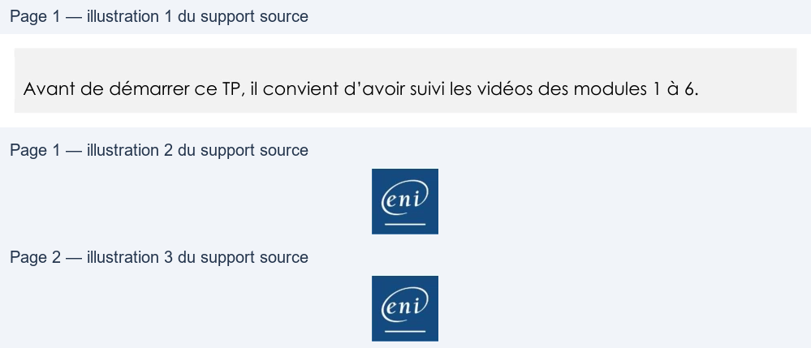

Transcription du document du Drive TSSR. La mise en forme est adaptée au Web ; les compléments IA du portail sont présentés séparément.
Initiation au scripting Bash
Solutions – TP2 du Module 06 – Exécution conditionnelle
Avant de démarrer ce TP, il convient d’avoir suivi les vidéos des modules 1 à 6.
Créer un algorithme de solution en réponse à un besoin et cahier des charges donné.
Créer un script à partir d’un algorithme.
Pour créer ce script, il faut travailler par étape.
Tout d’abord, il faut commencer par demander la saisie du compte utilisateur sur lequel agir.
Ensuite, il faut afficher le menu à l’écran et inviter à choisir une proposition dans la liste. Enfin, il
faudra gérer chaque choix possible en indiquant la/les commande(s) Shell à passer.
• Créer et éditer un nouveau fichier script script_M6TP2.sh
vim script_M6TP2.sh
• Ajouter les lignes suivantes :
#! /bin/bash
# M6 - Solution du TP2 - Script de gestion des utilisateurs locaux
# Demande de saisie du compte sur lequel agir
read -p " Saisir l'identifiant utilisateur souhaité : " nom
# Affichage du menu
echo "GESTION DES UTILISATEURS : $nom "
echo "----------------------------------"
echo "C - Créer le compte utilisateur"
echo "M - Modifier le mot de passe de l'utilisateur "
echo "S - Supprimer le compte utilisateur"
echo "V - Vérifier si le compte utilisateur existe"
echo "Q - quitter"
echo ""
Page 1/2
© ENI – Tous droits réservés
Initiation au scripting Bash
# Demander à choisir parmi la liste
read -p "Votre choix : " rep
# Gestion choix => action(s)
case $rep in
c|C ) echo "Création du compte"
useradd -m -s /bin/bash $nom ;;
m|M ) echo "Modification du mot de passe"
passwd $nom ;;
s|S ) echo "Suppression du compte"
userdel $nom ;;
v|V ) echo "Vérification de l’existence du compte"
userpresent=$(grep $nom "/etc/passwd")
if [[ -z $userpresent ]]; then
echo "Compte utilisateur de $nom INEXISTANT"
else echo "Compte utilisateur de $nom EXISTANT"
fi ;;
q|Q ) exit 0 ;;
*) echo "Erreur de saisie"
exit 1 ;;
esac
• Rendre exécutable le script à l’aide de chmod
En supplément, on pourrait avant toute action de création ou suppression, vérifier l’existence du
compte et ainsi éviter des erreurs système de se produire en cas d’échec.
Page 2/2
© ENI – Tous droits réservés
